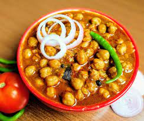

1.sarson ka saag
How to make sarson ka saag
1: chop and clean all the greens.
Chop off the lower end of the mustard seems just a few centimeters from the base.
The mustard stems can be tough. In this case you can discard the stems or keep them.
If you keep them, then they have to be cooked really well so that they become soft. Luckily, I had tender stems in the mustard bunch.
All the greens, sorted and nicely laid on the table… All going in the fridge for the saag to be made the next day.
2: washing the greens. This is the tough part.
You have to really wash the greens, especially the mustard greens well to get rid of the mud or soil clinging to the stems.
I did this task in batches.
3: add the washed greens in the pressure cooker.
4: then add other veggies – radish, onion, tomatoes, ginger and garlic.
5: now adding some spice & salt – green chilies, red chili powder, asafoetida & salt.
The saag is midly spiced and yet tastes so good.
6: Pour water.
Cover and pressure cook for 6-7 minutes or more till the greens become soft.
You can also cook in a pan. Cover and let the greens cook till they become soft.
7: Now let the pressure settle in the cooker.
When you open the lid, you will see the greens, onions, tomatoes etc all have cooked well.
Let the green mixture warm or cool at the room temperature.
8: Then in a blender take some of the greens.
Add maize flour. The maize flour helps in making the saag smooth as well as thickening it and does impart its flavor to the saag.
9: Blend till smooth. I usually make a smooth puree.
Some folks like a coarse texture. So you decide how you want your saag.
I blended in batches. You can also use a hand blender for the same and blend in the cooker itself.
If doing this then chop the greens before you pressure cook them. It is easier to blend with a hand blender then.
The traditional way is to use a Madani (the Indian hand blender) to blend the greens.
10: now pour the greens puree in a pan. I used the pressure cooker as while simmering the saag, it bubbles and splutters.
So be careful and use a deep pan.simmer and simmer for a good 25-30 minutes.
Stir occasionally so that the saag does not stick to the bottom of the pan. Check the seasoning and add more salt if required.
once cooled, the saag can be kept in an airtight container in the fridge.
Tempering for sarson da saag
11: so now after this comes the final touch… The saag is not ready to be served yet.
We have to temper the saag. We always temper the saag with onions, but you can temper with some ginger, green chilies and tomatoes too along with the onions.
Heat oil or ghee and add chopped onions.
The amount of oil/ghee and onions to be added depends on the portions of saag you will be serving. So for 3 servings, 1 to 2 tbsp oil with 1 medium sized onion is alright.
12: Lightly brown the onions.
Add the cooked sarson ka saag. Simmer.
13: Serve the hot sarson ka saag saag straight away with makki di roti.
The best is to serve with makki di roti. Nothing beats this combination. But you can also serve sarson ka saag with parathas and steamed rice.
2.Chole Bhature
For Bhature:-
1.Soak Semolina in ¼th-1/2 cup warm water. Semolina will make Bhature a little crisp.
2.We will pass Plain flour and Salt mixture through a sieve. This helps remove any kind of impurities.
3.Now add 1-tbsp Ghee and mix well using both your palms. Final consistency of the mixture must be like breadcrumbs.
4.Add Baking Soda and Sugar and mix well. Adding Sugar helps Bhatura remain puffed longer.
Add soaked semolina and sour curd to the mixture. Mix well.
5.Knead Bhatura dough with ¼th cup warm water.
Make a little stiff dough as we will be resting this dough for 4 hours and it becomes soft after resting. I have used 1½ tbsp water for kneading this stiff dough.
Apply some Oil on your palms and knead again with strech and pull method.
6.Final dough must be a bit stiff but pliable. Apply some Oil to the dough and keep it covered in a damp muslin cloth for 4 hours.
7.For frying Baturas- After 4 hours, Knead lightly and form a cylindrical log.
Pull out a ball shaped dough and roll each ball to remove cracks. Apply some Oil on each ball. Keep remaining dough covered in a damp cloth.
8.Apply Oil in rolling board and rolling pin. With a rolling pin, roll each ball into oval shaped baturas, edges must be thick.
Heat Oil in a pan for deep frying. Oil must be sufficiently hot when we put rolled bhaturas in pan.
While frying gently press Bhaturas so that it will rise. Change sides and fry from both sides.
Remove when it becomes evenly brown in color.
For Chole Masala:-

1.Tie tea leaf in a muslin cloth to make a tea bag. Transfer soaked Chole in a Pressure cooker.
Add 3 Cups water, whole spices (Ingredient 15-19), baking soda, some salt and tea bag.
Pressure cook for 5 mins on high and 10-12 mins on low. Reserve stock after pressure cooking.
2.Meanwhile, we will make a coarse masala paste of Green Chilies and Ginger root.
Do not use water while grinding.
Heat 3-tbsp Cooking Oil in a pan.
Add chopped Onions and fry until it becomes brown in color. We have cooked Onions for 10 mins on medium.
Add coarsely ground green masala, turmeric powder and fry for 1-2 mins.
3.Add Dried pomegranate seed powder and cook for 1-2 mins. Now, add chopped tomatoes and some salt for faster softening of tomatoes.
Mix well. Cover and Cook on low heat.
4.We have cooked tomatoes for 18 mins on low heat and it has become mushy.
Now add dry spice powders- Kashmiri Red Chili Powder, Cumin Seeds Powder, Coriander Seeds Powder, Garam Masala Powder and Sugar.
Mix well. Cook this masala for 4-5 mins. Add water when masala gets dry.
5.Add boiled Chole and Chole Masala Powder and mix well.
Add reserved stock and 1-2 cups of water and allow the chole masala to come to boil.Cover and cook on low heat for 5 mins.
We will prepare a Tadka for Chole Masala.
Add 1-tbsp Ghee, Ginger Juilennes and slit Green Chilies. Fry for a min.Put this Tadka on Chole Masala.
Remove from heat and cover until served
Tip# Add Ghee to Plain Flour mixture
Tip# Adding Sugar helps Bhatura remain puffed for longer
Tip# Always prefer sour curd. Lactic acid in curd reacts with baking soda and release CO2 which helps in rising of Bhatura dough
Tip# Oil must be sufficiently hot
Tip# Gently press with ladle for even steam distribution
3.Butter Chicken

For marination:
1.In a mixing bowl, put raw chicken pieces and add salt, red chilli powder, ginger garlic paste and lemon juice. Mix well.
2.Refrigerate for about 15-20 minutes.Butter Chicken
3.Now add curd to the refrigerated mix. Followed by salt, ginger garlic paste, red chilli powder, garam masala, kasuri methi and mustard oil.
Mix well and refrigerate again for an hour.
4.Roast the marinated chicken in an oven for about 30 minutes until it is three-fourth done.
Prepare the chicken gravy:
1.Heat 2 tsp of oil in a pan with butter.
2.Add cloves, cinnamon stick, mace and cardamom.
Saute and then add chopped tomatoes, garlic and ginger. Mix well and then grind well.
3.In another pan, heat another two cubes of butter, along with ginger garlic paste.
4.Add the tomato puree made from the mixture. Now add red chilli powder, kasuri methi, honey and finally the roasted chicken pieces. Let it simmer.
5.Add green chilli, cardamom powder and cream. Mix well.
6.Serve with a teaspoon of cream over.